| EXPGUI top | Next page (CIF export) | Previous page |
|---|
EXPGUI Utilities (2), EXCLEDT
A common use for this is to adjust the lower 2theta/Q limit (maximum d-space/TOF) so that data where no reflections occur can be ignored. It is also common to start refinements with a somewhat limited range of data, raising the upper 2theta/Q limit (minimum d-space/TOF) later. (The ideal is to include all data where any peaks can be resolved in the final stages of refinement.) Note that there is a disadvantage to changing the data range, if one is using the Chebyschev polynomial (type 1 background function) to fit the background, as this function is scaled over the range of data. If the data range is changed, the background function will shift and thus must be refit each time the data range is changed.
A second purpose of EXCLEDT is to set and change excluded regions within the pattern. When a region is set as excluded, the data within that region are ignored with respect to the Rietveld refinement. Note that data should be removed only where there is a good explanation why the region cannot be accurately modeled. This is sometimes needed to deal with scattering from a sample container (although this can frequently be modeled as an additional phase, using Le Bail extraction for that phase when the container is badly textured). Excluded regions are also used occasionally when an impurity manifests itself with only a few minor peaks, although it is usually much better to model the impurity intensity as an additional phase (again using Le Bail extraction for that phase when the structure is unknown or the material has severe preferred orientation). Excluded regions are sometime needed when a section of pattern is affected by stacking faults. Another occasional appropriate use is to eliminate spurious intensity that is due instrumental malfunctions. It is important not to exclude peaks simply because they cannot be indexed. Such peaks may indicate a difference in symmetry or unit cell from the structural model, or some other error. It is also important that excluded regions be documented in the paper which describes the study.
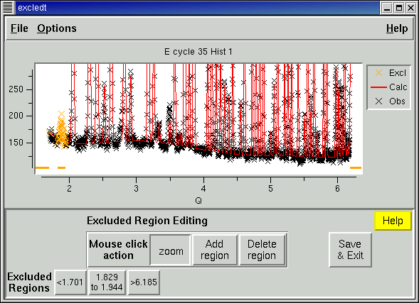
The EXCLEDT program displays the data in a graph, (see the example above)
with the observed data as data points (black X's by default)
and the computed values as a line (red by default). Any excluded data points
are shown in a different color (orange, by default).
Lines (again orange, by default) at the
bottom of the plot show the allowed data range as well as any excluded regions.
Note that if POWPREF has been run more recently then GENLES, the calculated
values are zero.
The EXCLEDT program can plot data in the native units (2-theta, TOF, energy),
converted to d-space units, or in the most ideal unit for
diffraction analysis, Q (2 pi/d).
Mouse use
The mouse can be used in three ways depending on the button pressed in the lower portion of the window.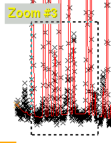 In Zoom mode, the cursor appears as cross hairs, and the mouse is used to select a region to be magnified by clicking on diagonal points in the region with the left mouse button (see below) or "zoomed out" with the right mouse button. Note that is is also possible to set the range manually, see below.
In Add Region mode, the mouse is used to map out a region which that
will be excluded from the refinement. When this button is selected, the
mouse cursor changes to an arrow. After the left mouse is pressed once,
a yellow background is shown for the excluded region, as is seen below.
When the left mouse
button is pressed a second time, the region is selected.
If the right mouse button is pressed instead, it resets the region selection.
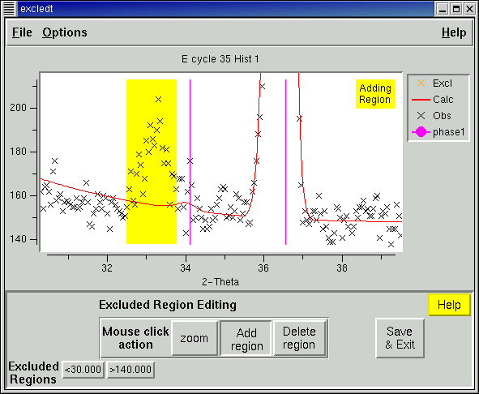
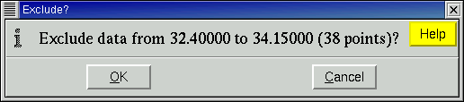
Before the region is added to the excluded list, a message is
displayed to confirm this. This
confirmation message can optionally be eliminated (See
Options/Prompt on add/del.)
In Delete Region mode, the mouse is used to select a region to be
deleted, causing the data in that region to be included in the refinement.
The cursor appears as a circle in the graph section of the window. After
a region has been selected to delete, a message is
displayed to confirm the region to be deleted from the exclusion list.
This confirmation message can optionally be eliminated (See
Options/Prompt on add/del.)
Keypad Shortcuts
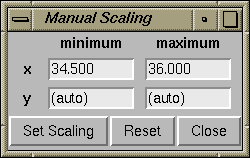
 If more than one histogram is available to plot, it is possible to cycle
between the histograms by pressing the "n" or "N" (for next) key.
If more than one histogram is available to plot, it is possible to cycle
between the histograms by pressing the "n" or "N" (for next) key.
 Tickmarks can be toggled on or off by pressing the
"1" key for phase 1, "2" for phase 2,...
Tickmarks can be toggled on or off by pressing the
"1" key for phase 1, "2" for phase 2,...
To shift the zoom region around,
the right and left arrow keys can be used to shift the
region 10 % to the left or right.
Likewise,
the up and down arrow keys can be used to shift the region up or down by 10 %.
Holding down the control key down while pressing these keys increases
the amount of the shift to 100 %.
Excluded Region/Simulation Range Buttons
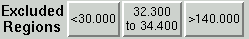 At the bottom of the window is a set of buttons with the minimum and maximum limit on the data as well as a button for every excluded region. Pressing a button causes a window to be opened to edit that region by manually entering values.where the data range can be set
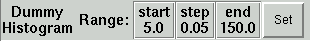
In the case where a dummy histogram will be edited, the information presented
in this box is formatted slightly differently (as shown to the right).
Pressing the set button creates a dialog box where the data range can be set,
see Editing Dummy Range.
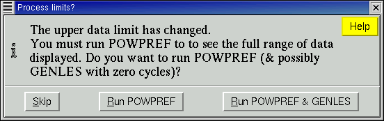
If the upper data limit is raised (or d-min is lowered) this message is
displayed. The reason is that EXCLEDT cannot display data above the
upper data limit until the changed limit has been processed in POWPREF.
If you also want to see the computed intensities in this region,
you will need to run GENLES as well, so this is also offered as an option.
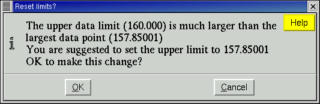
Note that it is possible to set the upper data limit (lower d-min limit)
well outside the range of data. If this is done, POWPREF will run slower
because many unneeded reflections are being included in the computation.
If this occurs and POWPREF is run inside EXCLEDT, a message such as
that to the right is shown. Unless there is some specific reason
(I do not know of one) it is probably best to accept this suggestion.
Editing Dummy Range
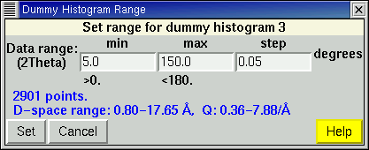 When the data range is edited, a box such as the one to the right will appear to set the data limits and step size. Note that these values are always displayed in the native units for the histogram (degrees, microseconds or Kev) regardless of the setting for the x-axis units, since the step size is constant in these native units. The data range is also shown in d-space and Q.
Note that it is not possible to edit the data range for
histograms with varying steps. At this time, this only affects
dummy TOF histograms simulated with logarithmic steps. The range can be
changed in the EXPEDT program.
Exiting EXCLEDT
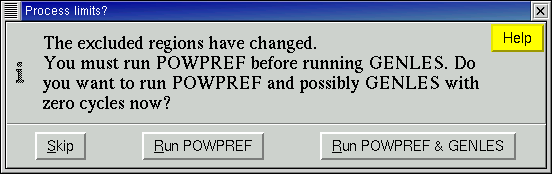 EXCLEDT can be exited using the File/Exit menu item or by pressing the "Save & Exit" button, or by pressing Control-C. If the excluded regions or data limits are changed, a message to reminding you to run POWPREF is shown. Note that you must run POWPREF before GENLES, if these items are changed.
File Menu Commands
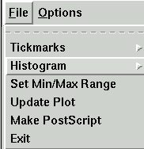- Tickmarks
- Invokes a submenu where tickmarks can be displayed or removed
for each phase present in the histogram.
Alternately, tickmarks can be displayed or removed
by pressing the
"1" key for phase 1, "2" for phase 2,...
See the Options/"Configure Tickmarks"menu item for information
on tickmarks
- Histogram
- This allows a different histogram to be displayed.
- Set Min/Max Range
- This opens a window where the usable data range may be changed.
- Update Plot
- The causes EXCLEDT to read read the current histogram again from the datafile. If excluded region or data range changes have been made, POWPREF & GENLES may be run first.
- Make PostScript
- Creates a low quality PostScript file containing the LIVEPLOT output. See the Options/"Set PS output" button for where the file is created.
- Exit
- Saves any changes to the excluded regions or data range. If changes have been made, POWPREF & GENLES may be run.
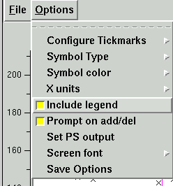
Options Menu
- Configure Tickmarks
- Tickmarks can be placed automatically, similar to their placement in POWPLOT or can be drawn one height to another. The default is for lines to be draw from "-Inf" to "Inf", which creates lines from the bottom to the top of the plot. The options for each phase allow the line to be changed between solid and dashed, color of the line can be specified and the vertical placement of the tickmarks can be specified. The "show" flag, set in the File/Tickmarks menu can also be changed here.
- Symbol Type
- This brings up a menu where the symbol type and size for the observed and excluded data points can be selected.
- Symbol Color
- The colors for all the displayed lines and symbols can be changed here.
- X units
- The x units can be selected here. The choices are "as collected" (2Theta/TOF/KeV), d-space (A) or Q (A-1)
- Include Legend
- The legend is the optional box in the upper left that defines the plot entries
- Prompt on add/del
- If this option is set, a prompt will be generated when excluded regions are added or deleted.
- Set PS output
- For UNIX this allows the file to be sent directly to a printer or can be saved in a file. For Windows, a file must be written.
| EXPGUI top | Next page (CIF export) | Previous page |
|---|